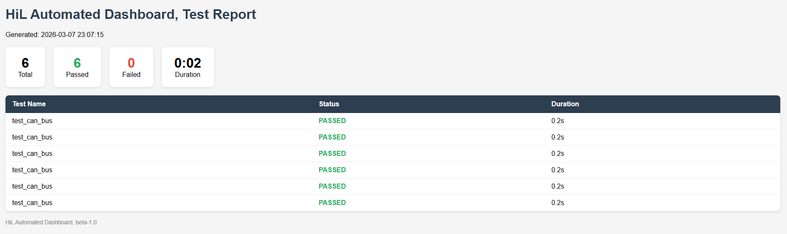

The dashboard was validated through a series of functional tests covering core user workflows, GUI behavior, and Pytest integration. Results below reflect the final test run prior to project delivery.

Screenshot placeholder — Pytest Output / Exported Report| # | Test Case | Module | Status | Notes |
|---|---|---|---|---|
| 1 | Dashboard launches without errors | GUI | PASS | Main window renders correctly on launch |
| 2 | Test suite checkboxes selectable | GUI | PASS | All checkboxes toggle state correctly |
| 3 | Run button triggers Pytest execution | Execution | PASS | subprocess call confirmed via log output |
| 4 | Live log streams output in real time | Execution | PASS | Output appears line-by-line during run |
| 5 | KPI cards update after run completes | Results | PASS | Pass/fail/skip counts reflect actual run |
| 6 | Export to CSV produces valid file | Reporting | PASS | File opens correctly in Excel/Sheets |
| 7 | Export to PDF produces valid file | Reporting | PASS | PDF renders test summary correctly |
| 8 | No tests selected edge case handled | GUI | PASS | Warning message displayed to user |
| 9 | Log panel clears between runs | GUI | PASS | Previous output does not persist |
| 10 | App remains responsive during test run | Execution | PASS | GUI does not freeze while Pytest runs |
| 11 | Invalid test path error handling | Execution | FAIL | Error message not shown to user; logged to console only |
| 12 | Hardware communication layer integration | HiL | SKIP | Deferred; hardware not available in current environment |